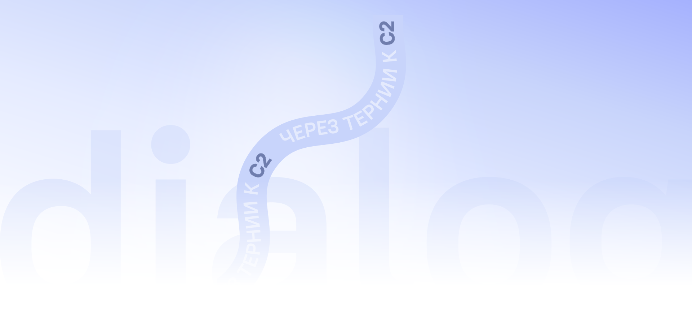
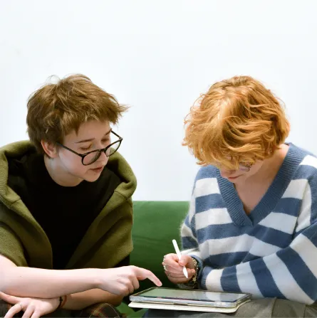

Deutsch fürs Leben in Deutschland und Österreich
Sprachschule mit Lehrkräften vom Fach
Damit du Muttersprachler:innen verstehst, sicher sprichst und Alltägliches ohne Stress regelst
Wir helfen dir, wenn du

Sicher in die Prüfung gehen willst
Trotz passender Erfahrung und Skills Absagen wegen deiner Deutschkenntnisse bekommst

Dich auf den Umzug vorbereitest oder schon in Deutschland oder Österreich lebst, aber jedes
Gespräch im Kopf durchgehst und die ständige Anspannung dich auslaugt

Einzelne Wörter verstehst, den Sinn aber nur aus dem Kontext errätst
Dich endlich auf Augenhöhe mit den Einheimischen fühlen willst
Мы поможем тебе, если ты

Gespräche im Kopf durchgehst und die Sprache dich ständig anspannt
Gespräche im Kopf durchgehst und die Sprache dich ständig anspannt

So läuft der Unterricht bei uns ab
Как выглядит обучение на практике
Vor dem Start bestimmen wir dein Niveau, deine echten Herausforderungen und dein Ziel. So weißt du genau, wo du stehst und warum du beginnst.
Das Programm richtet sich nach deinem Ziel: Alltag, Job, Prüfung, Umzug oder mehr Sicherheit im Gespräch. Wir geben dir gleich einen Überblick über Dauer und Etappen.
Der Unterricht findet auf Deutsch statt. Wir bringen dir bei, auf Deutsch zu denken statt im Kopf zu übersetzen, und helfen dir, ruhig und sicher zu sprechen.
Alle Materialien, Aufgaben und Übungen findest du übersichtlich auf unserer Plattform
und in der App.
Du siehst die Kursstruktur und kannst jederzeit zwischen den
Stunden
darauf zugreifen.
Dialoge, Telefonate, Alltagssituationen, Job und Prüfungen – dein Deutsch funktioniert auch außerhalb der Stunde, nicht nur während des Unterrichts.
Jede Stunde ist Teil eines roten Fadens: Du siehst genau, was du schon geschafft hast und wohin es als Nächstes geht.
Wie startest du?
In der Probestunde:

01bestimmen wir deinen Punkt A
besprechen wir dein Ziel und deine Herausforderungen
schlagen wir dir Programm, Format und die voraussichtliche Dauer vor
Kursformate
Einzelunterricht
Online Vor Ort in WienDeutsch nach deinem Bedarf und Ziel
Ideal, wenn du schnelle, klare Ergebnisse willst – ohne Zeit für Unwichtiges zu verlieren.
Wir arbeiten ganz individuell an deinem Ziel: Alltag, Job, Prüfungen oder ein
höheres Niveau.
Programm, Tempo und Format passen wir an dich an. So bringen
wir
System in deine Sprache und führen dich ohne Chaos zum Ergebnis.
Dauer: abhängig vom Ziel (besprechen wir in der Probestunde), meist ab 2 Monaten
Einzelunterricht
ZAHLEUR
Für ZAHL EUR buchenGruppenunterricht
Online Vor Ort in WienDeutsch in der Gruppe
Deutsch in der Gruppe – mit System. Ideal, wenn dir Sprechen und echte Kommunikation besonders wichtig sind.
Unterricht in kleinen Gruppen mit Fokus auf Sprechen, neuem Wortschatz und lebendigem Austausch.
Du lernst, in alltagsnahen Situationen zu sprechen, zuzuhören und zu reagieren.
auer: 3–5 Monate pro Niveau
Gruppenunterricht
ZAHLEUR
Für ZAHL EUR buchenBuchclub mit
Linguist
Online
Vor Ort in Wien
Buchclub mit Linguist
Für alle, die tiefer in die Sprache eintauchen wollen: Texte verstehen, Gedanken formulieren und über komplexere Themen sprechen.
Wir lesen zeitgenössische Bücher, erarbeiten den Wortschatz und besprechen den Inhalt. Du bekommst fertigen Wortschatz und Übungen, damit neue Vokabeln in den aktiven Sprachgebrauch übergehen. So erweiterst du deinen Wortschatz, strukturierst deine Sprache und sprichst präziser.
Dauer: abhängig vom Ziel (besprechen wir in der Probestunde), meist ab 2 Monaten
Buchclub mit Linguist
ZAHLEUR
Für ZAHL EUR buchenSprachclub mit Muttersprachler
Vor Ort in Wien Niveau A2–B2Sprachclub mit Muttersprachler
Wir besprechen echte Themen, lösen kleine Aufgaben und lernen, schneller, sicherer und natürlicher zu sprechen. Keine Angst – nur Unterstützung und Hilfe.
Hinweis unter den Formaten: Die Angaben zur Dauer sind ungefähr. Format und Tempo legen wir nach der kostenlosen Probestunde gemeinsam mit dir fest.
Termine des SprechclubsKursformate
Einzelunterricht
Ideal für alle, die schnell und effizient Fortschritte machen möchten – ohne Zeit für Unnötiges zu verlieren.
Der Unterricht wird individuell auf Ihr Ziel abgestimmt: Alltag, Beruf, Prüfungen oder allgemeine Sprachverbesserung. Lernplan, Tempo und Unterrichtsformat richten sich ganz nach Ihren Bedürfnissen. Wir helfen Ihnen, die Sprache systematisch zu lernen und Ihr Ziel sicher zu erreichen.
Dauer: abhängig vom Lernziel (wird in der kostenlosen Probestunde besprochen), meist ab 2 Monaten
Einzelunterricht
ZAHL EUR
Gruppenunterricht
Deutsch lernen in kleinen Gruppen mit einem systematischen Ansatz. Ideal für alle, die ihre Sprachpraxis und Kommunikation verbessern möchten.
Der Unterricht findet in kleinen Gruppen statt und legt den Schwerpunkt auf Sprechen, Wortschatz und aktiven Austausch.
Sie lernen, in realistischen Alltagssituationen sicher zu sprechen, zuzuhören und spontan zu reagieren.
Dauer: 3–5 Monate pro Sprachniveau
Gruppenunterricht
ZAHL EUR
Konversationsclub mit Muttersprachlern
Wir sprechen über Alltagsthemen, bearbeiten kurze Aufgaben und trainieren flüssiges, sicheres und natürliches Sprechen. Ohne Angst – mit Unterstützung und einer angenehmen Lernatmosphäre.
Die angegebenen Zeiträume dienen als Orientierung.
Lernformat und Lerntempo werden nach der kostenlosen Probestunde individuell auf Ihre Ziele
abgestimmt.
Armina Taroian
Neurolinguistin, Gründerin der Schule
„Ich verantworte die Methodik und die Lehrprogramme. Im Zentrum stehen ein systematischer Aufbau und ein klares Ergebnis. Alle Lehrkräfte sind Linguist:innen und arbeiten nach demselben Ansatz. Das Team stelle ich persönlich zusammen und achte auf die Qualität des Unterrichts."
Wer arbeitet mit dir?
Ich bin für unsere Lehrmethodik und die Entwicklung der Lernprogramme verantwortlich.
Im Mittelpunkt stehen ein klarer Aufbau und nachhaltige Lernerfolge.
Alle unsere Lehrkräfte sind qualifizierte Sprachwissenschaftler:innen und unterrichten nach
einem einheitlichen Konzept.
Ich stelle das Team persönlich zusammen und achte auf die hohe Qualität des Unterrichts.

Polina
B1 · ÖIF · DTZ · Österreich
Irina
A1–B1 · Goethe · ÖSD
Darina
B2+ · ÖIF · Österreich
Anastasia
Ab null · ÖIF · Deutschland
Polina
B1 · ÖIF · DTZ · Österreich
Erfahrungen unserer Schüler:innen
Häufig gestellte Fragen (FAQ)
Die Probestunde ist eine erste Einheit, in der du deine Lehrkraft und unsere Methode
kennenlernst und dein aktuelles Deutschniveau bestimmt wird. Danach stimmen wir gemeinsam
ein individuelles Lernprogramm ab und planen deine Stunden.
Dauer: 30 Minuten
Kosten: kostenlos
Ab dem Niveau A2 findet der Unterricht komplett auf Deutsch statt (bei Bedarf mit
Erklärungen wichtiger Begriffe auf Russisch) – je nach deinen Wünschen und Zielen. Schon ab
einem niedrigen Niveau auf Deutsch zu sprechen ist sehr effektiv, weil die Sprache über
echten Kontext verinnerlicht wird statt über Übersetzung.
Neurolinguistisch betrachtet
bildet das Gehirn stabilere Sprachverbindungen, wenn du die Sprache direkt hörst und
anwendest. Keine Sorge: Die Lehrkraft unterstützt dich jederzeit, erklärt bei Bedarf auf
Russisch und setzt dich nie unter Stress. So gehst du Schritt für Schritt und ohne Druck zum
Deutschen über.
In der Probestunde klären wir deine Ziele und machen einen Einstufungstest. Danach bekommst du eine Empfehlung für die passende Gruppe oder das passende Programm.
Im Preis enthalten sind:
• Gruppenunterricht (90 Minuten) oder 8/24 Einzelstunden (60 Minuten)
• Erstellung eines individuellen Lernprogramms
• Zugang zur Lernplattform
• alle Lernmaterialien
• Chat mit der Lehrkraft für Fragen zu Materialien und Hausaufgaben
• Support-Chat bei technischen Problemen
Im Gruppenunterricht: Die Aufzeichnung steht dir 30–45 Minuten nach Unterrichtsende zur
Verfügung. So kannst du die Stunde selbstständig nachholen und die Themen mit den
Hausaufgaben festigen.
Im Einzelunterricht: Bitte sag deiner Lehrkraft so früh wie möglich über die
Nachrichtenfunktion der Plattform Bescheid, wenn du absagen oder verschieben möchtest. Bei
einer Absage oder Verschiebung weniger als 12 Stunden vor Unterrichtsbeginn gilt die Stunde
als gehalten und wird voll verrechnet.
Sagt die Lehrkraft eine Einzelstunde weniger als 12 Stunden vor Beginn ab, erhältst du eine kostenlose Zusatzstunde. Schreib dafür einfach unseren Support auf Telegram – das Team bucht dir die Stunde nach.